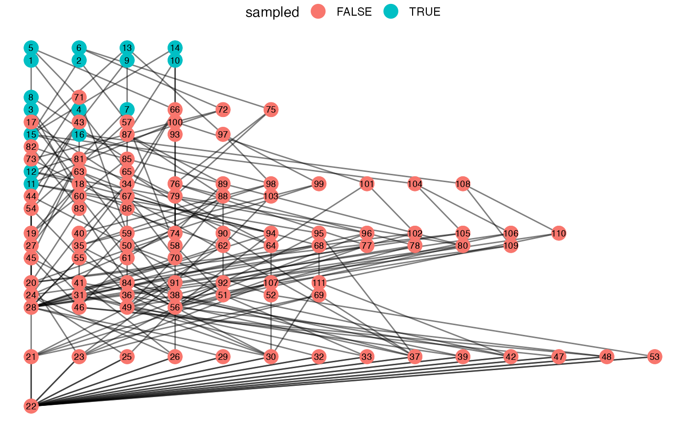
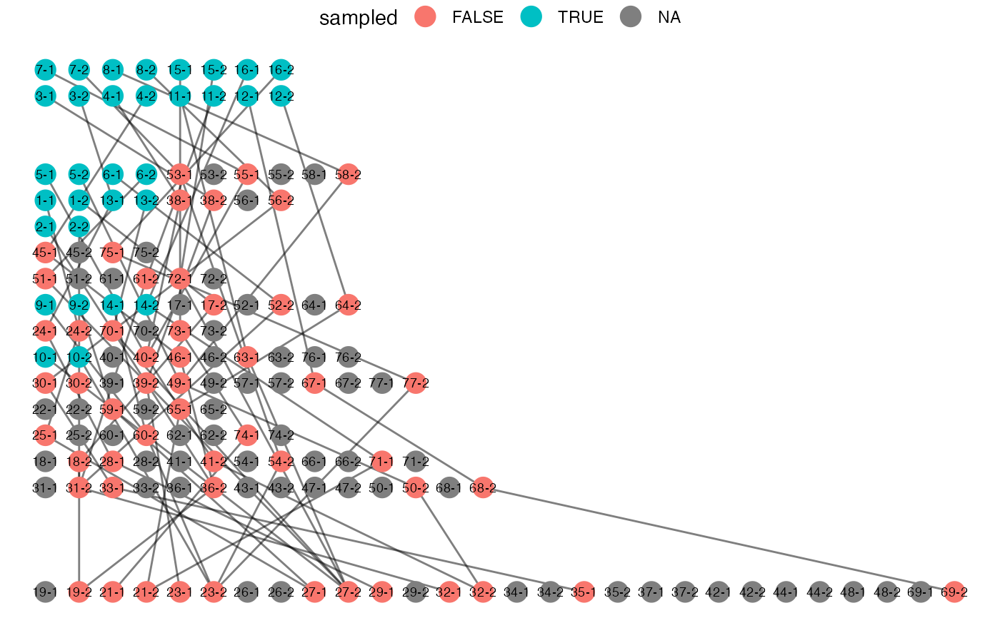

Sample family trees and generated gene genealogies can be visualized briefly
with the plot() method. The output can be further customized with ggplot2
functions.
The input can be also customized.
First, use augment() to add coordinates and other attributes for plotting.
Then you can modify them as needed.
Finally, build the plot with ggplot2::ggplot().
Usage
# S3 method for class 'sample_family'
augment(x, layout = NULL, ...)
# S3 method for class 'genealogy'
augment(x, layout = NULL, ...)
layout_demography(x)
# S3 method for class 'genealogy'
plot(x, ..., lwd = 0.5, cex = 5, pch = 16)
# S3 method for class 'sample_family'
plot(x, ..., lwd = 0.5, cex = 5, pch = 16)Arguments
- x
A
sample_familyofgenealogydata.frame.- layout
A data.frame or function to compute coordinates.
layout_demography()is applied by default.- ...
Additional arguments passed to the layout function.
- lwd
passed to ggplot2::geom_segment.
- cex, pch
passed to ggplot2::geom_point and ggplot2::geom_text.
Value
augment() returns a data.frame suitable for plotting.
layout_demography() computes coordinates for plotting genealogy.
plot() returns a ggplot2 object.
Examples
set.seed(666)
result = tekka("-y25 -l2 --sa 2,2 --sj 2,2")
samples = result$sample_family[[1L]]
augment(samples)
#> # A tibble: 222 × 10
#> from to birth_year capture_year sampled x y xend yend label
#> <int> <int> <int> <int> <lgl> <int> <int> <int> <int> <int>
#> 1 17 1 24 24 TRUE 1 24 1 19 1
#> 2 43 1 24 24 TRUE 1 24 2 19 1
#> 3 57 2 24 24 TRUE 2 24 3 19 2
#> 4 15 2 24 24 TRUE 2 24 1 18 2
#> 5 59 3 20 24 TRUE 1 20 3 10 3
#> 6 60 3 20 24 TRUE 1 20 2 13 3
#> 7 63 4 20 24 TRUE 2 20 2 15 4
#> 8 65 4 20 24 TRUE 2 20 3 15 4
#> 9 66 5 25 25 TRUE 1 25 4 20 5
#> 10 71 5 25 25 TRUE 1 25 2 21 5
#> # ℹ 212 more rows
plot(samples) +
ggplot2::theme_void() +
ggplot2::theme(legend.position = "top")

genealogy = make_gene_genealogy(samples)
plot(genealogy) +
ggplot2::theme_void() +
ggplot2::theme(legend.position = "top")
